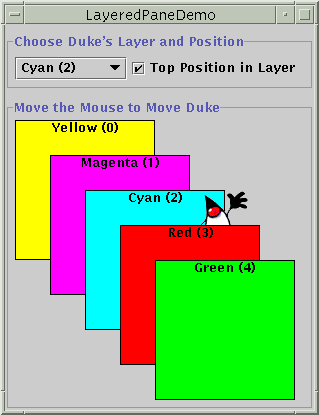
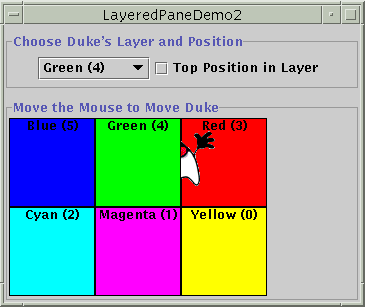

Feedback Form
|
|
Start of Tutorial > Start of Trail > Start of Lesson |
Search
Feedback Form |
A layered pane is a Swing container that provides a third dimension for positioning components: depth, also known as Z order. When adding a component to a layered pane, you specify its depth as an integer. The higher the number, the higher the depth. If components overlap, components at a higher depth are drawn on top of components at a lower depth. The relationship between components at the same depth is determined by their positions within the depth.Every Swing container that has a root pane -- such as
JFrame,JApplet,JDialog, orJInternalFrame-- automatically has a layered pane. Most programs don't explicitly use the root pane's layered pane, so we don't discuss it in this section. You can find information about it in The Root Pane, which provides an overview, and The Layered Pane, which has further details. This section concentrates on telling you how to create your own layered pane and use it anywhere you might use a regular Swing container.Swing provides two layered pane classes. The first,
JLayeredPane, is the class that root panes use and is the class used by the example in this section. The second,
JDesktopPane, is aJLayeredPanesubclass that's specialized for the task of holding internal frames. For examples of usingJDesktopPane, see How to Use Internal Frames.Here's a picture of an application that creates a layered pane and places overlapping, colored labels at different depths:
 Here's the code from the example program that creates the layered pane:
Try this:
- Compile and run the application. The source file is
LayeredPaneDemo.java. You will also need the
dukeWaveRed.gifimage file.
See Getting Started with Swing if you need help compiling or running this application.- Move the mouse around in the lower part of the window. The image of Duke drags behind the green and red labels, but in front of the other three labels.
- Use the combo box at the top of the window to change Duke's depth. Use the check box to set whether Duke is in the top position -- position 0 -- within the current depth.
The code useslayeredPane = new JLayeredPane(); layeredPane.setPreferredSize(new Dimension(300, 310)); layeredPane.setBorder(BorderFactory.createTitledBorder( "Move the Mouse to Move Duke")); layeredPane.addMouseMotionListener(new MouseMotionAdapter() { ... });JLayeredPane's only constructor -- the no-argument constructor -- to create the layered pane. The rest of the code uses methods inherited from superclasses to give the layered pane a preferred size and a border, and add a mouse-motion listener to it. The mouse-motion listener just moves the Duke image around in response to mouse movement.Ultimately, the example adds the layered pane to the frame's content pane:
As we'll show you a bit later, you add components to a layered pane using anContainer contentPane = getContentPane(); ... contentPane.add(layeredPane);addmethod. When adding a component to a layered pane, you specify the component's depth, and optionally, its position within its depth. The layered pane in the demo program contains six labels -- the five colored labels and a sixth one that displays the Duke image. As the program demonstrates, both the depth of a component and its position with that depth can change dynamically.The rest of this section covers these topics:
Here's the code from the sample program that adds the colored labels to the layered pane:You can find the implementation of thefor (int i = 0; i < ...number of labels...; i++) { JLabel label = createColoredLabel(...); layeredPane.add(label, new Integer(i)); ... }createColoredLabelmethod in the source code for the program. It just creates an opaqueJLabelinitialized with a background color, a border, some text, and a size.The example program uses a two-argument version of the
addmethod. The first argument is the component to add, the second is anIntegerobject, specifying the depth. This program uses theforloop's iteration variable to specify depths. The actual values don't matter much. What matters is the relative value of the depths and that you are consistent within your program in how you use each depth.
Note: If you use the root pane's layered pane, be sure to use its depth conventions. Refer to The Layered Pane for details. That section shows you how to modifyLayeredPaneDemoto use the root pane's layered pane. With the modifications, you can see how the dragging Duke image relates to the combo box in the control panel.As you can see from the example program, if components overlap, components at a higher depth are on top of components at a lower depth. To change a component's depth dynamically, use the
setLayermethod. In the example, the user can change Duke's layer by making a selection from the combo box. Here's theactionPerformedmethod of the action listener registered on the combo box:Thepublic void actionPerformed(ActionEvent e) { int position = onTop.isSelected() ? 0 : 1; layeredPane.setLayer(dukeLabel, layerList.getSelectedIndex(), position); }setLayermethod used here takes three arguments: the component whose depth is to be set, the new depth, and the position within the depth.JLayeredPanehas a two-argument version ofsetLayerthat takes only the component and the new depth. That method puts the component at the bottom position in its depth.
A note of caution: When adding a component to a layered pane you specify the layer with anInteger. When usingsetLayerto change a component's layer, you use anint. You might think that if you use anintinstead of anIntegerwith theaddmethod, the compiler would complain or your program would throw an illegal argument exception. But the compiler says nothing, which results in a common layered pane problem. You can use the API tables at the end of this section to check the types of the arguments and return values for methods that deal with layers.
The following code creates the label that displays Duke's image, and then adds the label to the layered pane.This code uses the three-argument version of thefinal ImageIcon icon = new ImageIcon("images/dukeWaveRed.gif"); ... dukeLabel = new JLabel(icon); dukeLabel.setBounds(15, 225, icon.getIconWidth(), icon.getIconHeight()); layeredPane.add(dukeLabel, new Integer(2), 0);addmethod. The third argument specifies the Duke label's position within its depth, which determines the component's relationship with other components at the same depth.Positions are specified with an
intbetween -1 and (n - 1), where n is the number of components at the depth. Unlike layer numbers, the smaller the position number, the higher the component within its depth. Using -1 is the same as using n - 1; it indicates the bottom-most position. Using 0 specifies that the component should be in the top-most position within its depth. As the following figure shows, with the exception of -1, a lower position number indicates a higher position within a depth.A component's position within its layer can change dynamically. In the example, you can use the check box to determine whether Duke label is in the top position at its depth. Here's the actionPerformedmethod for the action listener registered on the check box:When the user selects the check box, thepublic void actionPerformed(ActionEvent e) { if (onTop.isSelected()) layeredPane.moveToFront(dukeLabel); else layeredPane.moveToBack(dukeLabel); }moveToFrontmethod moves Duke to the front (position 0). And when the user deselects check box, Duke gets moved to the back with themoveToBackmethod. You can also use thesetPositionmethod or the three-argument version ofsetLayerto change a component's position.
By default a layered pane has no layout manager. This means that you typically have to write the code that positions and sizes the components you put in a layered pane.The example uses the
setBoundsmethod to set the size and position of each of the labels:When the user moves the mouse around, the program callsdukeLabel.setBounds(15, 225, icon.getIconWidth(), icon.getIconHeight()); ... label.setBounds(origin.x, origin.y, 140, 140);setPositionto change Duke's position:Although a layered pane has no layout manager by default, you can still assign a layout manager to the layered pane. All of the layout managers provided by the Java platform arrange the components as if they were all on one layer. Here's a version of the previous demo that sets the layered pane's layout manager to an instance ofdukeLabel.setLocation(e.getX()-XFUDGE, e.getY()-YFUDGE);GridLayout, using that layout manager to lay out six colored labels. You can find the code for this program inLayeredPaneDemo2.javadukeWaveRed.gifimage file.Many programs use intermediate containers (such as panels) and their layout managers to lay out components on the same layer, but use absolute positioning to lay out components on different layers. For more information about absolute positioning, see Doing Without a Layout Manager (Absolute Positioning)
.
The following tables list the commonly usedJLayeredPaneconstructors and methods. Other methods you are most likely to invoke on aJLayeredPaneobject are those it inherits from its superclasses, such assetBorder,setPreferredSize, and so on. See The JComponent API for tables of commonly used inherited methods.The API for using layered pane falls into these categories:
Creating or Getting a Layered Pane Method Purpose JLayeredPane()Create a layered pane. JLayeredPane getLayeredPane()
(inJApplet,JDialog,JFrame, andJInternalFrame)Get the automatic layered pane in an applet, dialog, frame, or internal frame.
Layering Components Method Purpose void add(Component)
void add(Component, Integer)
void add(Component, Integer, int)Add the specified component to the layered pane. The second argument, when present, indicates the layer. The third argument, when present, indicates the component's position within its layer. If you use the one-argument version of this method, the component is added to layer 0. If you use the one- or two-argument version of this method, the component is placed underneath all other components currently in the same layer. void setLayer(Component, int)
void setLayer(Component, int, int)Change the component's layer. The second argument indicates the layer. The third argument, when present, indicates the component's position within its layer. int getLayer(Component)
int getLayer(JComponent)Get the layer for the specified component. int getComponentCountInLayer(int)Get the number of components in the specified layer. The value returned by this method can be useful for computing position values. Component[] getComponentsInLayer(int)Get an array of all the components in the specified layer. int highestLayer()
int lowestLayer()Compute the highest or lowest layer currently in use.
Setting Components' Intra-Layer Positions Method Purpose void setPosition(Component, int)
int getPosition(Component)Set or get the position for the specified component within its layer. void moveToFront(Component)
void moveToBack(Component)Move the specified component to the front or back of its layer.
This table shows the examples that useJLayeredPaneand where those examples are described.
Example Where Described Notes LayeredPaneDemoThis section Illustrates layers and intra-layer positions of a JLayeredPane.LayeredPaneDemo2This section Uses a layout manager to help lay out the components in a layered pane. No source provided The Layered Pane The description describes how to change LayeredPaneDemoto use the root pane's layered pane.InternalFrameDemoHow to Use Internal Frames Uses a JDesktopFrameto manage internal frames.MovingLabelsMoving an Image Across the Screen Animates a rocketship using layers in a layered pane.
|
|
Start of Tutorial > Start of Trail > Start of Lesson |
Search
Feedback Form |

{kind=link}